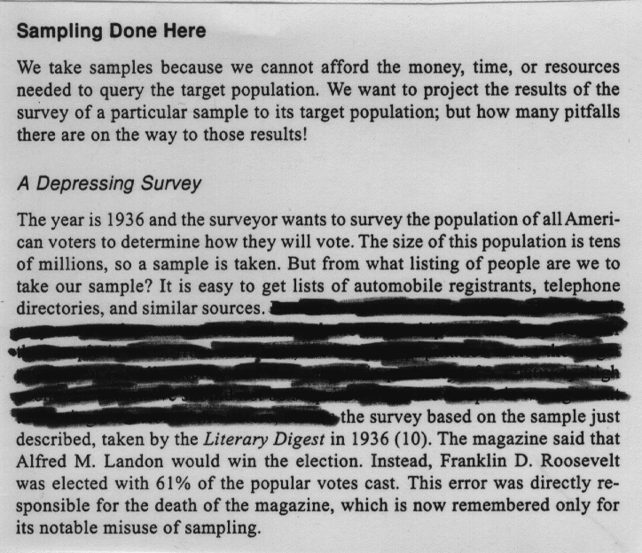

Stat 250, Section 003, Homework Assignment 8 (Due 3/31/99 in class)
- 1) Please work on the following textbook exercises in
Moore:
- Exercise 3.2, 3.4, 3.6, 3.8, 3.12, 3.18, 3.20 (1 point each)
- Exercise 3.26, 3.28, 3.36, 3.42 (1 point each)
- Exercise 3.30, 3.44, 3.48 (2 points each)
Most of these questions can be answered with 2 or 3 sentences.
Do not write an entire essay.
- 2) Below is an excerpt from page 157 from Spirer, Spirer, and
Jaffe's book "Misused Statistics" published by Marcel Dekker in 1998.
What did the Literary Digest do wrong
when sampling based on lists of automobile registrants,
telephone directories, and similar sources? You should answer this
with respect to the historical circumstances, not using todays
standards.
(3 points)
